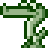
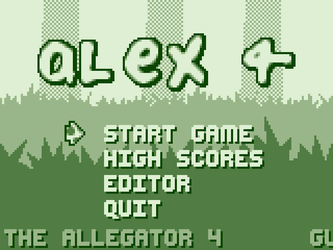
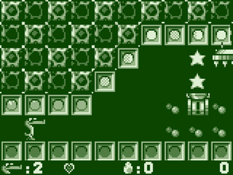
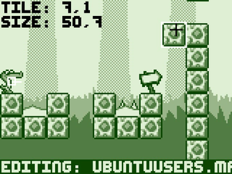

Alex the Allegator 4
Dieser Artikel wurde für die folgenden Ubuntu-Versionen getestet:
Ubuntu 14.04 Trusty Tahr
Zum Verständnis dieses Artikels sind folgende Seiten hilfreich:
 Alex the Allegator 4 ist ein Jump'n'Run-Spiel. Alex Freundin Lolo wurde von Menschen entführt. Um zu verhindern, dass man aus ihr ein Paar Schuhe herstellt, macht er sich auf, um sie aus den Fängen des Bösewichts zu retten. Das Spielerlebnis erinnert durch die Grafik und die Toneffekte an ein Spiel aus den Anfangszeiten des GameBoys. Über den integrierten Editor können eigene Karten erstellt werden.
|  |  |
| Menü | Spielszene |
Installation¶
Das Spiel ist in den Paketquellen enthalten und kann über das folgende Paket installiert [1] werden:
alex4 (universe)
 mit apturl
mit apturl
Paketliste zum Kopieren:
sudo apt-get install alex4
sudo aptitude install alex4
Anschließend ist es unter "Spiele -> Alex the Allegator 4" zu finden oder kann über alex4 gestartet [2] werden. Nach dem ersten Start wird im Homeverzeichnis der versteckte Ordner ~/.alex4/ angelegt.
Editor¶
Der Editor kann über das Hauptmenü gestartet werden.
| Editor | |
| Taste(n) | Funktion |
| ⇧ + L | Karte laden |
| ⇧ + S | Karte speichern |
| Einfg + ← / → | Karte vergrößern |
| Entf + ← / → | Karte verkürzen |
| F1 | Einstellungen der Karte ändern (z.B. Titel) |
 | Fliese setzen |
| Z / X | Fliese wechseln |
| P | Palette der zur Verfügung stehenden Fliesen |
 | Fliese wählen |
| Q | Sofortiger Tod |
| W | Ausgang |
| E | Auslösende Kugel |
| R | Zerstörbarer Block |
| Y | Wasseroberfläche |
| T | Wasser |
| A | Startposition von Alex (nach links blickend) |
| ⇧ + A | Startposition von Alex (nach rechts blickend) |
| 1 | Zusatzleben |
| 2 | Bonus: Stern |
| 3 | Bonus: Kirschen |
| 4 | Ei |
| 5 | Extra: Herz |
| ⇧ + Q | Grunzer |
| ⇧ + W | Grunzer mit Speer |
| ⇧ + E | Crusher |
| ⇧ + R | Stachelfisch |
| ⇧ + T | Qualle |
| ⇧ + Y | Kanone |
| ⇧ + U | Bossgegner (Mit Stacheln bewehrter Laster) |
| ⇧ + I | Boss-Stampfer |
|  |
| Editor |
Selber erstellt Karten liegen im .map-Format vor. Sofern man die gewünschte Anzahl von Karten erstellt und diese in einem gemeinsamen Verzeichnis abgelegt hat, öffnet man einen Editor [3] und erstellt eine Datei nach dem folgenden Muster:
In this game, Alex must rescue the Yellow Tetris Piece from the pirates of Ching Shih. #start# journey.map sea-of-despair.map endgame.map #end#
Vor #start# kann eine kurze Beschreibung eingefügt werden. Zwischen #start# und #end#, welche immer vorhanden sein müssen, werden die einzelnen Level aufgeführt. Anschließend wird die Datei im Ordner mit dem Level/den Leveln mit dem gewünschten Titel (z.B. ubuntuusers.txt) abgespeichert. Der Ordner kann abschließend als .zip-Archiv komprimiert [4] und der Community zur Verfügung gestellt werden.
Karten¶
Um eine bestimmte Karte zu verwenden, startet man das Spiel gefolgt vom Namen des Levels:
alex4 ubuntuusers.txt
Eine Reihe von Karten ist auf den folgenden Seiten zu finden:

Die Archive nach dem herunterladen in ein beliebiges Verzeichnis entpacken [4].
Hinweis:
Einige Level wurden nicht unter Linux geschrieben. So kann es vorkommen, dass in der Beschreibung ein Level ubuntuusers.map heißt, aber im Verzeichnis UBUNTUUSERS.MAP zu finden ist. Hier müssen die Dateinamen angepasst werden, da Linux im Gegensatz zu Windows die Gross-/Kleinschreibung von Dateinamen berücksichtigt.
Tastenkürzel¶
| Tastenkürzel | |
| Taste(n) | Funktion |
| ← / → | Steuerung |
| Alt | Sprung |
| Strg | Schießen (mit den Eiern) |
| 1 - 4 | Auflösung (160x120 / 320x240 / 640x480 / Vollbild) |

Infobox¶
| Alex the Allegator 4 | |
| Genre: | Jump'n'Run |
| Sprache: |  |
| Veröffentlichung: | 2003 |
| Entwickler: | Johan Peitz und Anders Svensson |
| Systemvoraussetzungen: | - |
| Medien: | Download |
| Strichcode / EAN / GTIN: | - |
| Läuft mit: | nativ |
- Erstellt mit Inyoka
-
 2004 – 2017 ubuntuusers.de • Einige Rechte vorbehalten
2004 – 2017 ubuntuusers.de • Einige Rechte vorbehalten
Lizenz • Kontakt • Datenschutz • Impressum • Serverstatus -
Serverhousing gespendet von